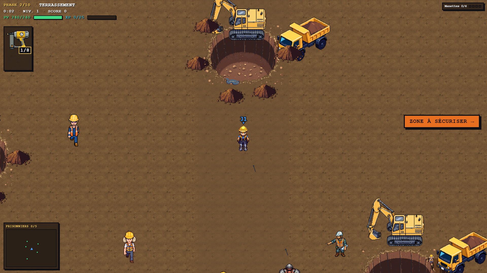
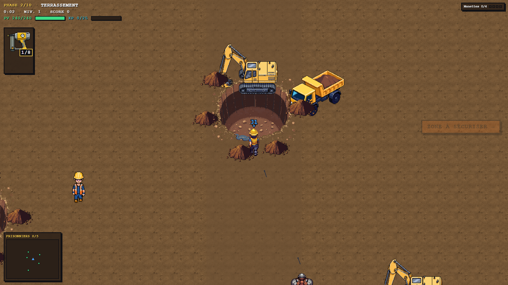
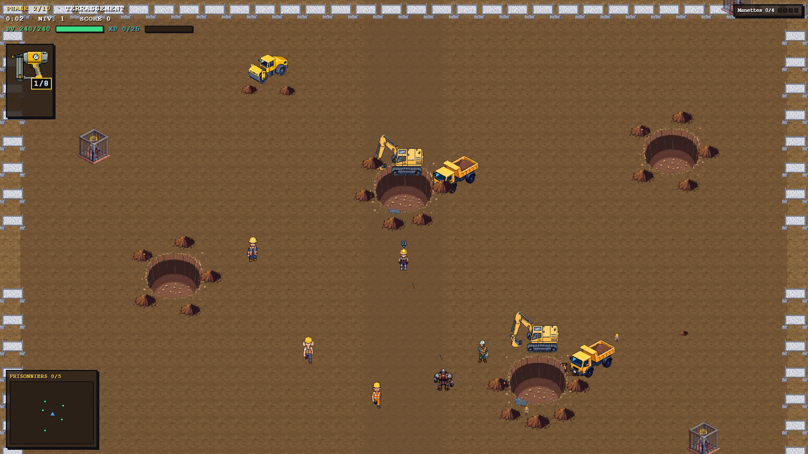
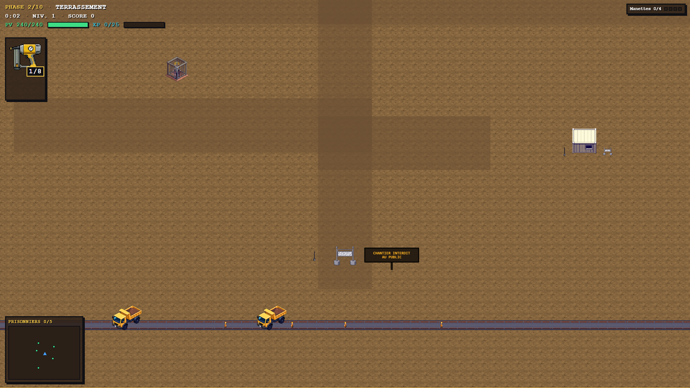
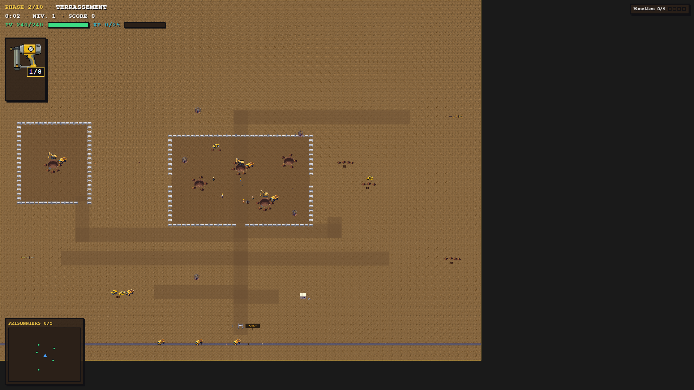

Réponse à tes 6 points. Tout est data-driven + testé (aucune fosse sans son anneau de déblais + engin, poche de spawn libre, ancres non-collées) et validé aux portes tsc / lint / 948 Vitest / sim:check diff 0 / 18 e2e.

Le joueur (J1) démarre dans la fouille clôturée, face à un front actif : trou, pelleteuse qui creuse dedans, camion-benne qu'on charge. Un 2ᵉ front au SE. La poche de spawn reste libre (il ne naît pas dans le trou — vérifié par test).

Quand il monte, il est stoppé net au bord du trou (collision) — le trou est un vrai obstacle, pas un décalque traversable.

Plusieurs fronts (trou + anneau de déblais + pelleteuse + camion), un rouleau compresseur, des prisonniers en cage. La clôture est debout (fini couchée).

Le panneau « CHANTIER INTERDIT AU PUBLIC » au portail ; des camions bennes chargés roulent sur la piste (terre compactée, plus de traces pourries) et partent évacuer la terre ; base vie à l'est.

Zone de travail principale clôturée (au centre, le joueur dedans) + fouille secondaire ouest ; corridors d'accès depuis le portail ; piste + support (parc / base vie / stock) au sud.
chargement…
En jeu (ce PC) : http://localhost:3000/?autostart=solo&level=2&seed=1